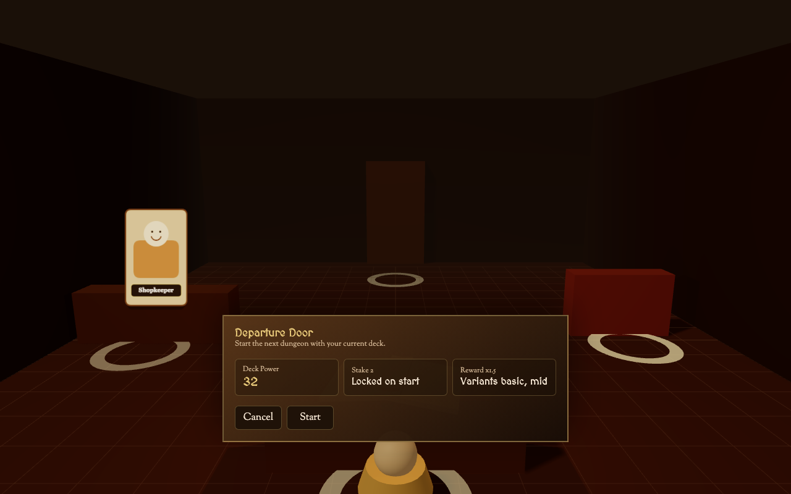
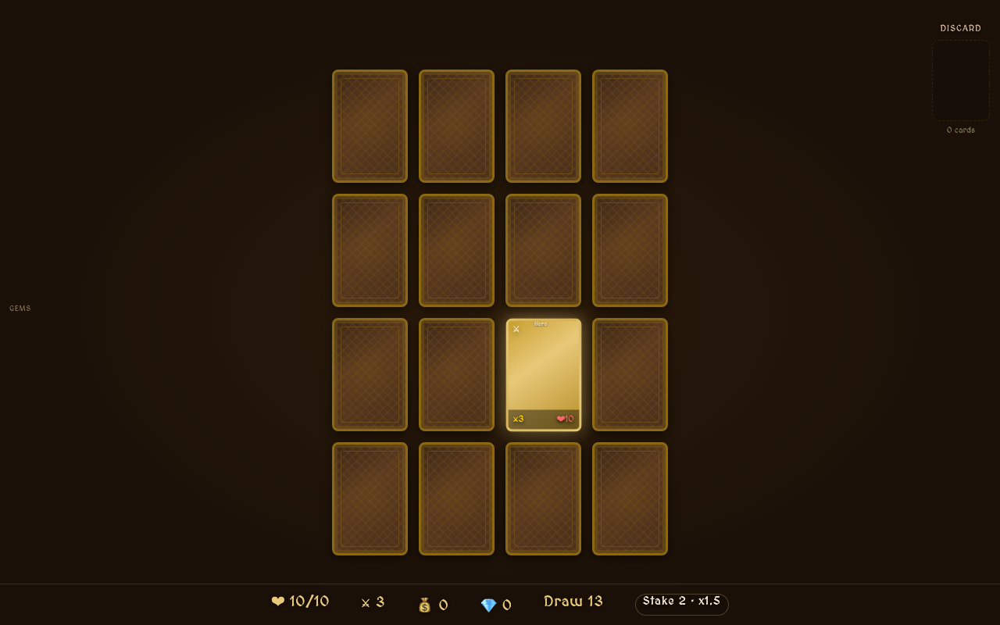
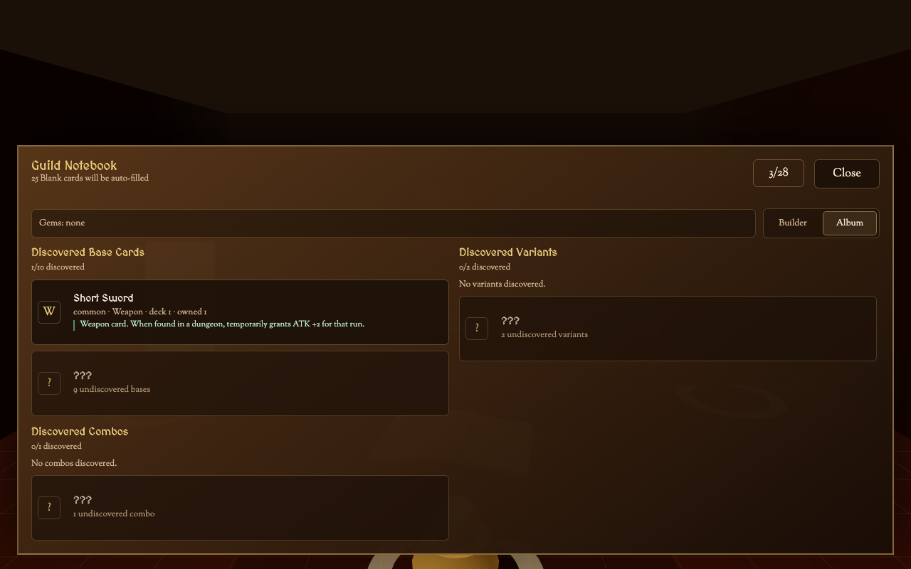

01
组卡
局外决定带什么卡、宝石和角色入场，形成这一局的 loadout。
这篇记录的是一个正在推进的系统设计样本：如何把卡组构筑、4x4 翻牌探索、撤离节奏、宝石镶嵌、怪物变体和数值框架放进同一个可玩的 demo 里。

玩家能不能亲手把危险、奖励、出口、怪物变体和自己的 build 倾向构筑进地下城，并在局内继续围绕这些选择做判断？
Flip or Flop 的基础体验来自 Card Hog 式的相邻格处理，但它把地下城内容交给玩家自己的卡组、宝石和角色选择来塑形。
局外决定带什么卡、宝石和角色入场，形成这一局的 loadout。
固定 4x4 棋盘从 draw pile 抽牌补入，未知来自初始背面和后续变体揭晓。
战斗、宝箱、血瓶、陷阱和事件都以相邻格选择的方式进入同一个行动节奏。
找到出口后决定带资源离开，还是继续把 HP 预算花在更高收益上。
资源回到酒馆，继续买卡、开包、镶嵌、升级，再把新的风险带回 dungeon。
HP 在这里首先是一笔可支配预算。打怪、开危险宝箱、追高收益变体，本质都是在问这笔 HP 兑换值不值。
战斗不做暴击，变体进 dungeon 时锁定，reveal 时展示结果。危险来自未知和取舍，不来自决策后的暗骰。
角色、starter relic 和扭曲宝石提供过滤、加权、三选一等工具，让玩家逐渐把混沌捏成自己想要的那种确定性。
Power Budget、stake、reward multiplier、variant 来源和 combo 升格都要在 card face、hover/detail 或 debug/dev 层有各自的位置。
旧 tier 方案容易变成外部难度档位。现在的做法是从玩家出发前的 loadoutPower 生成 stakeContext，并让奖励、变体和组合升格一起响应。
读取卡组、镶嵌宝石、角色、starter relic 和后续 pre-run modifier。
进入 dungeon 前计算一次，本局锁定。局内临时卡、临时 buff 和本局新获得永久奖励影响下一局预览。
奖励倍率、Variant pool 子集/加权、ComboPromotion 的 stake eligibility。
威胁来自内容池、组合和收益压力，不把所有怪物简单乘 HP/ATK。
Flip or Flop 的 Meta 表面很厚：卡组、宝石、角色、开包、局外成长都在 run 前发生。为了让局内不只是在执行预案，VariantPool 把“这张卡今天以什么方式出现”放进 dungeon。
基础身份来自玩家带入的卡，宝石转化身份来自玩家镶嵌，变体由系统在进 dungeon 时锁定，状态由局内行为推进。这样玩家仍然是构筑作者，系统负责制造局内具体遭遇。
贪婪哥布林、工兵哥布林、巢居哥布林、巫师哥布林、狡猾哥布林分别服务不同 cluster。藏宝哥布林则来自 combo promotion：当变体、宝石和 stake 条件同时成立时，卡的身份可以升格成更具体的遭遇。
普通卡 reveal 时自动揭晓一个锁定变体；镶嵌变数之眼的卡会在 reveal 时给出 3 个候选，让玩家选择本次遭遇。这让随机仍然存在，但玩家能用 build 把随机收束到自己愿意承担的范围。

角色回答“我用谁开局”，cluster 回答“我这一局围绕什么关系展开”。这让 build 可以从内容组合里浮现出来，避免提前把所有玩家路线写死。
战士偏向战斗和过滤，盗贼偏向贪婪、额外揭示和藏宝哥布林，法师/巫蛊师在后续版本补齐。
C1/C2/C3/C8 等 cluster 用来组织怪物变体、宝石规则、relic 和 combo 的互相牵引，并给玩家路线留下浮现空间。
M1 hard filter、M2 weighting、M5 reveal choice 分别处理过滤、偏置和当场选择。
角色之间可以有强度差，关键是每条路线有清楚的风险、收益和表达空间。
数值系统本身成立还不够。玩家需要知道当前卡的身份、变体、stake 奖励、角色/relic 影响和发现状态；否则 build 只会停在设计文档里。

这仍然是正在推进中的 demo。它已经能展示系统设计如何进入玩法结构，但还没有进入正式发布版本。
固定 4x4 draw-pile dungeon、方向 lane 补牌、出口确认、强宝石矩阵、开包揭晓、ContentRegistry、身份层、CardPresentation、VariantPool、PowerBudget、ComboPromotion、CardAlbum、Warrior/Rogue、多个 Goblin 变体和 Treasure Goblin。
v0.7 Round Out：补齐更多 Goblin 变体、DiscardRecycle / SummonPool 等桥接基础设施，以及 Mage / Cultist 两个角色的可玩入口。
正式美术、完整 Boss、通用词缀池、Orc/Wraith 内容池、成就系统、发布级 UI 和长期平衡仍在后续版本。
这页展示的是系统设计判断：HP 货币、输入随机、方差收敛、Power Budget、VariantPool 和双层 build 框架如何共同塑造一个 roguelike demo。